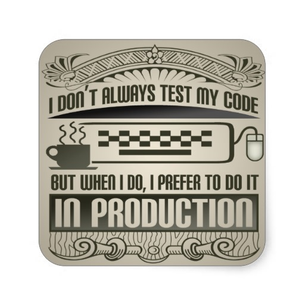

How to Deploy PHP Applications
Safely, Efficiently, and Frequently
Without Loosing Your Sanity (completely)
Created by Mihail Irintchev
Head of Software Development
SiteGround.com Web Hosting Co.
About me
- Name: Mihail Irintchev
- From Sofia, Bulgaria
- Web developer since 2003
- Work @ SiteGround
- Organizing @bgphp UG
- Love beer!
My car
My office
Prizesss

What is your deployment process like?

Overview of build essentials:
- Revision control system
- Continuous testing
- Continuous integration
- Staging environment
- Automatic documentation
- Code health metrics
- Deployment mechanism
... and you want all that plus more wrapped in ...
An automated build procedure!
Revision control systems

C'mon, it's 2014 !!!
Some less common ones

Basic Distinction Between
Versioning Systems
| Local data model | Distributed model |
|---|---|
| SVN | GIT |
| CVS | Bazaar |
| darcs |
Basic distinction between models


What can the version control
do for you?
(apart from storing and versioning your code)
- pre-commit and post-commit hooks
What is pre-commit good for?
Prevent people from committing bad code
- Run php lint (
php -l) on the newly committed code
for i in `$SVNLOOK changed -t "$TXN" "$REPOS" | $AWK '{print $2}'`
do
if [[ $i =~ "\.php$" ]]; then
# Run php lint to make sure no code with parse errors is committed
CHECK=`$SVNLOOK cat -t "$TXN" "$REPOS" $i | $PHP -d html_errors=off -l || echo $i`
RETURN=`echo $CHECK | $GREP "^No syntax" > /dev/null && echo TRUE || echo FALSE`
if [ $RETURN = 'FALSE' ]; then
echo $CHECK 1>&2;
exit 1
fi
fi
done
Enforce code standards
- Run PHP_CodeSniffer (
phpcs) - Catch any serious violations (use levels)
<?php
echo "Hello world!";
#phpcs hello.php
FILE: /home/madasha/tmp/hello.php
--------------------------------------------------------------------------------
FOUND 1 ERROR(S) AFFECTING 1 LINE(S)
--------------------------------------------------------------------------------
2 | ERROR | Missing file doc comment
--------------------------------------------------------------------------------
Time: 16 ms, Memory: 2.50Mb
Prevent some foolish mistakes
- ... like dumping DB user and pass on your home page
- ... or embarass yourself by leaving some other
var_dump()/print_r()/var_export()behind
The "Golden" rule
So just add another section to the pre-commit hook
if [[ $i =~ "\.php$" ]]; then
# ...
# Grep for var_dump/var_export/print_r (the last two without second param passed)
# to prevent code committed with debugging instructions to go into the repo
CHECK=`$SVNLOOK cat -t "$TXN" "$REPOS" $i | \
$GREP -e "\(var_dump[ \t]*(\|\(var_export\|print_r\)[ \t]*([^,)]\+)\)" -m1 -c`
RETURN=`echo $CHECK | $GREP "1" > /dev/null && echo TRUE || echo FALSE`
if [ $RETURN = 'TRUE' ]; then
echo "var_dump/print_r/var_export found in $i" 1>&2;
exit 2
fi
# ...
fi
Anything else?
Your imagination is pretty much the boundary
What is post-commit good for?
- Automated logging
- Notifications
There are other hooks as well
| SVN | GIT |
|---|---|
|
|
The build software

What does phing stand for?
PHing Is Not GNU make
“It's a PHP project build system or build tool based on Apache Ant. You can do anything with it that you could do with a traditional build system like GNU make...”
But why phing?

Seriously, why phing?
- Very flexible and robust build tool
- Simple XML build file
- Variety of built-in and optional tasks
- Very easy to write your own custom task
- Good docs and community
- Platform independent
- No required external dependencies
Very easy installation
Through PEAR:
$ pear channel-discover pear.phing.info
$ pear install [--alldeps] phing/phing
Through Composer:
{
"require-dev": {
"phing/phing": "2.*"
}
}
A sample XML build file
<?xml version="1.0" encoding="UTF-8"?>
<project name="FooBar" default="dist">
<!-- ============================================ -->
<!-- Target: prepare -->
<!-- ============================================ -->
<target name="prepare">
<echo msg="Making directory ./build" />
<mkdir dir="./build" />
</target>
<!-- ============================================ -->
<!-- Target: build -->
<!-- ============================================ -->
<target name="build" depends="prepare">
<echo msg="Copying files to build directory..." />
<echo msg="Copying ./about.php to ./build directory..." />
<copy file="./about.php" tofile="./build/about.php" />
<echo msg="Copying ./browsers.php to ./build directory..." />
<copy file="./browsers.php" tofile="./build/browsers.php" />
<echo msg="Copying ./contact.php to ./build directory..." />
<copy file="./contact.php" tofile="./build/contact.php" />
</target>
<!-- ============================================ -->
<!-- (DEFAULT) Target: dist -->
<!-- ============================================ -->
<target name="dist" depends="build">
<echo msg="Creating archive..." />
<tar destfile="./build/build.tar.gz" compression="gzip">
<fileset dir="./build">
<include name="*" />
</fileset>
</tar>
<echo msg="Files copied and compressed in build directory OK!" />
</target>
</project>
Task #1: Update from SVN
<!-- ============================================================ -->
<!-- Target: svn_update - updates from svn, prints last revision -->
<!-- ============================================================ -->
<target name="svn_update">
<svnupdate
svnpath="/usr/bin/svn"
nocache="true"
username="${svn_user}"
password="${svn_pass}"
todir="${srcdir}" />
<svnlastrevision
svnpath="/usr/bin/svn"
workingcopy="${srcdir}"
propertyname="svn.lastrevision" />
<echo msg="Updated ${srcdir} to revision ${svn.lastrevision}" />
</target>
Task #2: Unit-tests
What is your php unit-testing preferred framework?
Task #2: Run Unit-tests in phing
<!-- ===================================================================== -->
<!-- Target: phpunit - a subtask that runs PHPUnit on phpunit tests/suits -->
<!-- ===================================================================== -->
<target name="phpunit">
<echo msg="Running PHPUnit tests after SVN update:" />
<phpunit haltonfailure="true" haltonerror="true" bootstrap="bootstrap.php">
<formatter type="plain" usefile="false" />
<batchtest>
<fileset dir="tests">
<include name="*Test.php"/>
</fileset>
</batchtest>
</phpunit>
</target>
Warning: LIVE demo ahead
May the gods of live demos be kind right now
Task #3: JS Unit-tests
Your client-side code can be just as crucial as the server-side one, so why not test it continuously as well?
The tools?

Task #3: Run QUnit tests in phing
<path id="project.class.path">
<pathelement dir="./lib/" />
</path>
<taskdef name="qunit" classname="QunitTask">
<classpath refid="project.class.path" />
</taskdef>
<target name="qunit" description="JavaScript Unit Test">
<qunit executable="/usr/bin/phantomjs" haltonfailure="true"
runner="lib/run-qunit.js">
<fileset dir=".">
<include name="jstests/runner.htm" />
</fileset>
</qunit>
</target>
The example above is using Qunit Phing Task by Martin Jonsson
Task #4: Automatic documentation
The tool: phpDocumentor 2
<phpdoc2 title="Gallery Documentation"
destdir="docs"
template="responsive-twig">
<fileset dir="./classes">
<include name="**/*.php" />
</fileset>
</phpdoc2>
Code metrics tasks
The tools?
Guess what? There exist ready-made phing tasks for all of them!
Tasks #5: phpmd
Person behind: Manuel Pichler
<!-- ===================================================================== -->
<!-- Target: phpmd - a subtask that runs PHPMD on predefined dirs/files -->
<!-- and generates reports in the desired format -->
<!-- ===================================================================== -->
<target name="phpmd">
<phpmd rulesets="cleancode,design,unusedcode">
<fileset dir="${srcdir}">
<include name="classes/**/*.php" />
</fileset>
<formatter type="xml" outfile="${srcdir}/reports/pmd.xml"/>
</phpmd>
</target>
Task #6: phpcpd
Person behind: Sebastian Bergmann
<!-- ===================================================================== -->
<!-- Target: phpcpd - a subtask that runs PHPCPD on predefined dirs/files -->
<!-- and generates reports in the desired format -->
<!-- ===================================================================== -->
<target name="phpcpd">
<phpcpd>
<fileset dir="${srcdir}">
<include name="classes/**/*.php" />
</fileset>
<formatter type="pmd" outfile="${srcdir}/reports/pmd-cpd.xml"/>
</phpcpd>
</target>
Task #7: pdepend
Person behind: Manuel Pichler
<!-- ===================================================================== -->
<!-- Target: pdepend - a subtask that runs pdepend on predefined dirs/files-->
<!-- and generates reports in the desired format -->
<!-- ===================================================================== -->
<target name="pdepend">
<phpdepend>
<fileset dir="${srcdir}">
<include name="classes/**/*.php" />
</fileset>
<logger type="jdepend-xml" outfile="${srcdir}/reports/pdepend.xml"/>
<logger type="jdepend-chart" outfile="${srcdir}/reports/pchart.svg"/>
<logger type="overview-pyramid" outfile="${srcdir}/reports/pyramid.svg"/>
<analyzer type="coderank-mode" value="method"/>
</phpdepend>
</target>
What else can you use phing for?
What else could you possibly ask for?


A GUI tool to visualize the process?
Why Jenkins?
- Very easy to install
- Very flexible
- Lots of plugins
- Nice GUI
Let me show you

Don't make Gladys angry

Takeaways
- There are a lot of things you can automate in a build
(strong emphasis on continuous testing & integration) - There are a lot of tools out there that can help you do that
- phing is a very neat tool to organize your build process
- Jenkins is a great tool to visualize, log, compare, and manage your builds
Credits & references
"Quality Assurance for PHP Projects"
by Michelangelo van Dam
"Browser Eyeballing != JavaScript Testing"
by Jordan Kasper
"PHP Continuous integration, with Jenkins and Phing"
by Marcelo Gornstein